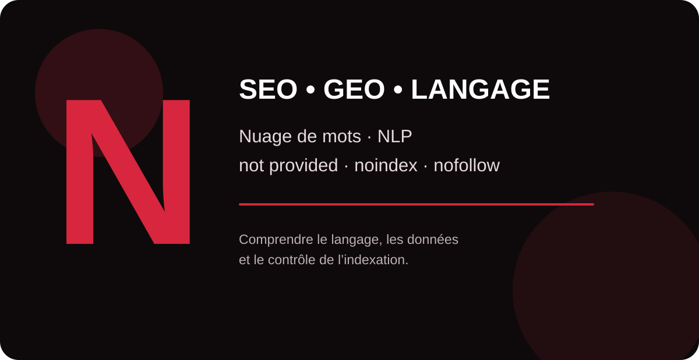

Le SEO et le GEO reposent à la fois sur la compréhension du langage, l’analyse des données et la maîtrise des signaux techniques. Ce guide MinoSeo décrypte quatre notions en N souvent rencontrées dans les audits, les outils analytics et l’optimisation des contenus.

nuage de mots
Un nuage de mots est une représentation visuelle d’un ensemble de termes dans laquelle la taille d’un mot reflète généralement sa fréquence ou son poids dans le corpus analysé. Il permet d’obtenir rapidement une vue d’ensemble du vocabulaire dominant d’une page, d’un groupe de contenus, de commentaires clients ou de requêtes.
En SEO, le nuage de mots peut servir d’outil exploratoire pour repérer les thèmes très présents, les répétitions ou certains champs lexicaux. Il ne constitue cependant ni un score de pertinence SEO ni une méthode de classement. Un mot fréquent n’est pas automatiquement un mot important pour Google, et une fréquence élevée ne garantit aucune performance.
Pour une analyse réellement utile, il faut compléter cette visualisation par l’intention de recherche, les entités, les relations sémantiques, la structure des contenus et les données issues de Search Console. En GEO, le même principe s’applique : la clarté d’un sujet et des relations entre concepts est plus importante qu’une répétition mécanique de termes.
Natural Language Processing
Le Natural Language Processing (NLP), ou traitement automatique du langage naturel, regroupe des méthodes informatiques permettant d’analyser, comprendre ou générer du langage humain. Le NLP peut notamment intervenir dans la classification de textes, l’identification d’entités, l’analyse de relations entre mots, la traduction, le résumé ou les systèmes conversationnels.
Pour le SEO, cette notion aide à comprendre pourquoi une stratégie moderne doit dépasser la simple correspondance exacte entre une requête et un mot-clé. Les systèmes de recherche peuvent exploiter le contexte et les relations entre concepts pour mieux interpréter les formulations des utilisateurs. Cela encourage la création de pages structurées, précises et réellement centrées sur un sujet.
Le NLP est également central pour le GEO : les assistants et moteurs génératifs reposent sur des modèles capables de traiter le langage naturel. Une marque gagne donc à publier des informations explicites, cohérentes et facilement interprétables : qui elle est, ce qu’elle propose, pour quels publics, avec quelles preuves et dans quel contexte.
not provided
« (not provided) » est historiquement associé aux mots-clés organiques que Google Analytics ne transmettait pas en clair dans ses rapports, notamment pour protéger la confidentialité des recherches. Il ne signifie pas nécessairement qu’un suivi est mal installé : le trafic organique peut être mesuré sans que la requête exacte soit rattachée à chaque session Analytics.
Aujourd’hui, la bonne approche consiste à compléter l’analyse Analytics avec Google Search Console. Search Console fournit des données agrégées sur les requêtes ayant généré des impressions et des clics, les pages concernées, les positions moyennes et le taux de clics. Une liaison entre Search Console et Google Analytics permet également de rapprocher visibilité dans les résultats et comportement sur le site, sans pour autant reconstituer chaque requête individuelle pour chaque visiteur.
Noindex Nofollow
Noindex et nofollow sont deux directives distinctes que l’on peut notamment transmettre aux robots via une balise meta robots. noindex demande aux moteurs compatibles de ne pas afficher la page dans leurs résultats. nofollow leur demande de ne pas suivre les liens présents sur cette page. La valeur none équivaut, pour Google, à noindex, nofollow.
La combinaison peut s’écrire <meta name="robots" content="noindex, nofollow">. Elle doit être utilisée avec discernement : une directive placée par erreur sur une page stratégique peut compromettre sa visibilité. Pour que Google détecte un noindex, il doit pouvoir explorer la page ; bloquer simultanément l’URL dans robots.txt peut donc empêcher Googlebot de lire cette directive.
Il faut aussi distinguer le nofollow au niveau d’une page du marquage d’un lien individuel. Dans un audit SEO, MinoSeo vérifie ces directives sur les modèles de pages, les environnements de préproduction, les filtres et les contenus stratégiques afin d’éviter les exclusions accidentelles.
Comment relier ces notions dans une stratégie SEO et GEO ?
Ces termes couvrent quatre dimensions complémentaires. Le nuage de mots aide à visualiser un corpus ; le NLP éclaire la manière dont les machines traitent le langage ; not provided rappelle les limites de l’attribution des requêtes dans les outils analytics ; et noindex/nofollow permet de contrôler certains comportements des robots.
| Notion | Utilité | Point de vigilance SEO/GEO |
|---|---|---|
| Nuage de mots | Visualiser rapidement le vocabulaire dominant | Ne pas confondre fréquence et pertinence |
| Natural Language Processing | Traiter et interpréter le langage humain | Privilégier contexte, entités et clarté sémantique |
| not provided | Signale l’absence de requête organique détaillée dans Analytics | Compléter l’analyse avec Search Console |
| Noindex | Empêcher l’affichage d’une page dans les résultats compatibles | Laisser la page accessible au crawl pour que la directive soit lue |
| Nofollow | Demander de ne pas suivre les liens d’une page | Éviter une application globale non intentionnelle |
MinoSeo accompagne les entreprises dans l’audit technique, la stratégie sémantique, l’analyse Search Console et la structuration de contenus adaptés au SEO comme aux nouveaux environnements de recherche générative.
Transformez vos données et contenus en visibilité durable
Identifiez les freins techniques et sémantiques de votre site avec une approche SEO/GEO structurée.
Demander un audit gratuit